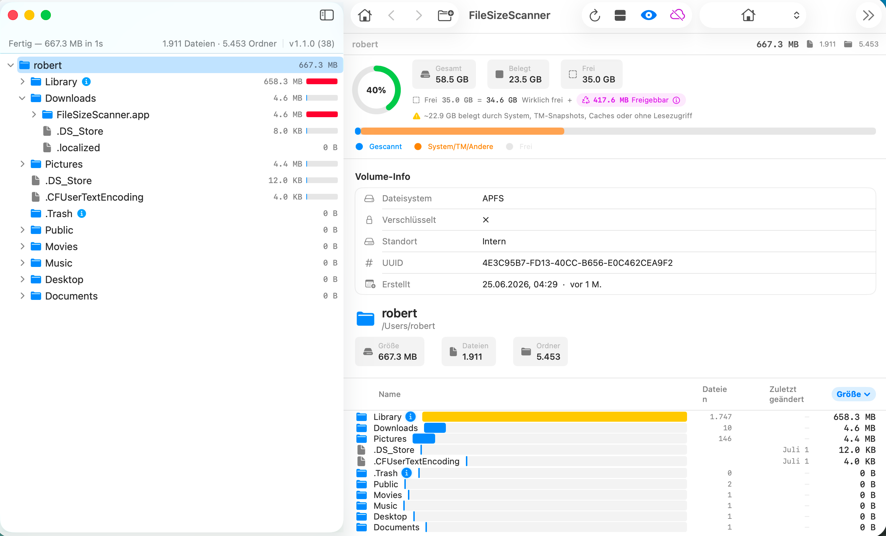
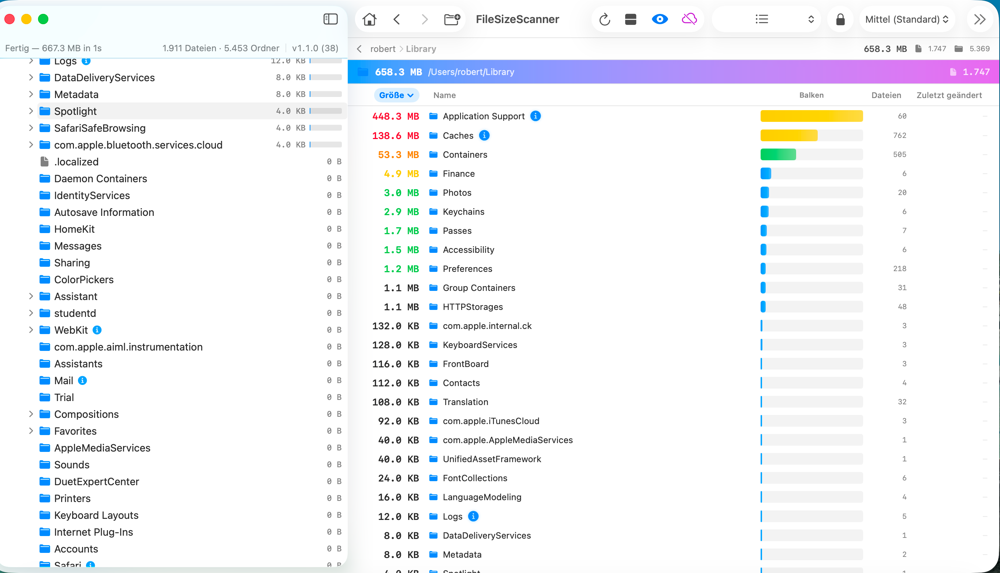
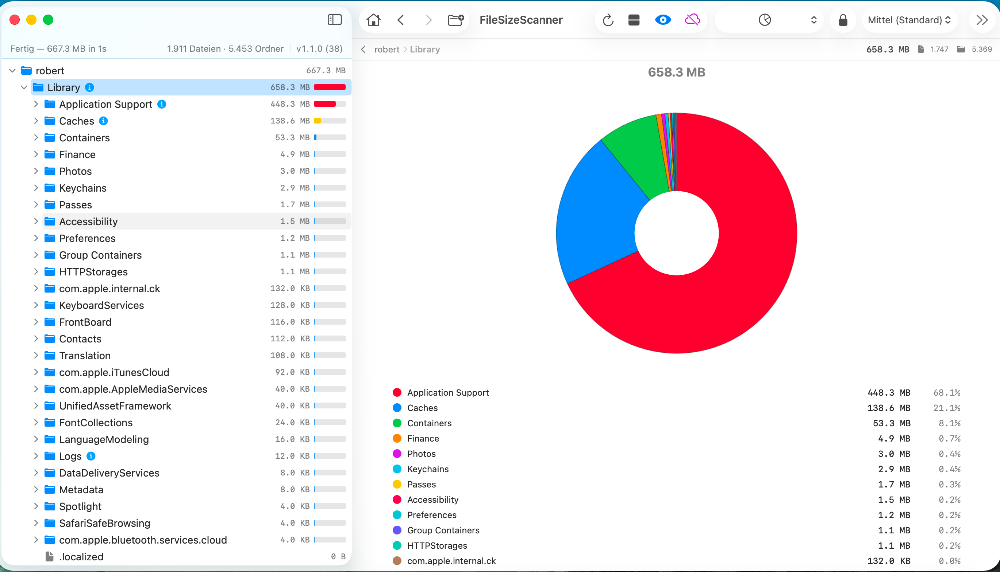
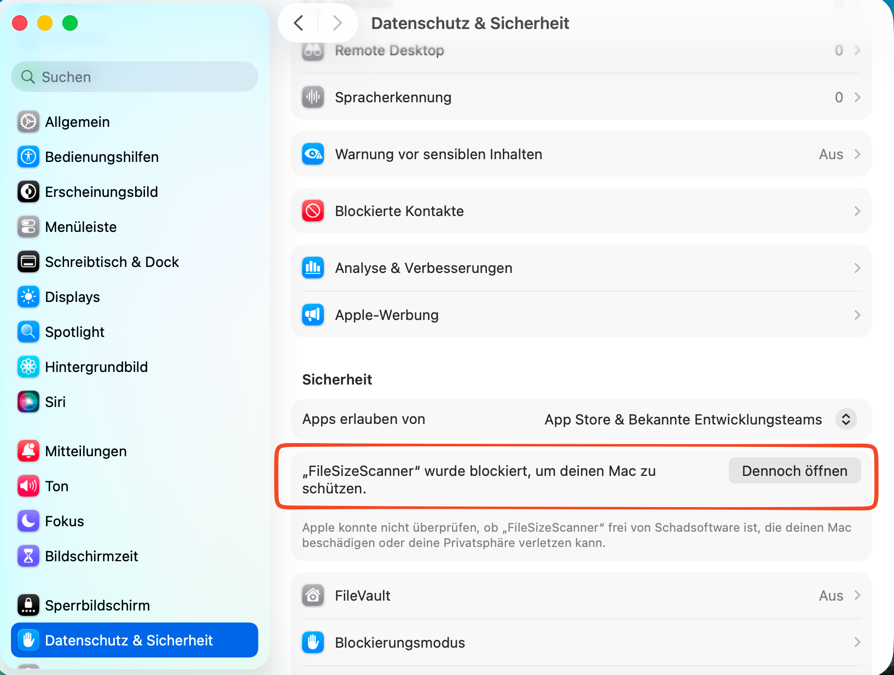

A fast, native macOS app for visualizing and analyzing disk space usage.

Six powerful views. One click to find what's eating your storage.
File tree, list view, pie chart, treemap, and file type breakdown — switch instantly between them.
Scans thousands of files per second with live progress. Cancel and restart anytime.
Square-root scale bars make large vs. small size differences immediately visible at a glance.
Top 100 largest files with one-click Reveal in Finder or safe Move to Trash.
Skips OneDrive, Dropbox and iCloud Drive to avoid triggering unwanted sync downloads.
Finds large files not modified for 1, 2, 3 or 5+ years — perfect for deep cleaning.
Ring chart showing free, used and purgeable space. APFS volume info included.
Fully localized UI. Follows your macOS language setting automatically.
Navigate your entire disk with a click. No guessing — every byte is accounted for.
Sort by size, name, file count, or date modified. Color-coded bars make hot spots jump out instantly.

Top 12 items rendered as an interactive pie chart. Click any slice to navigate into that folder.

Because FileSizeScanner is distributed outside the App Store, macOS will ask you to confirm the first time. Here's how:

FileSizeScanner is completely free. If it saved you some disk space, buy me a beer! 🍺
☕ Buy Me a Coffee